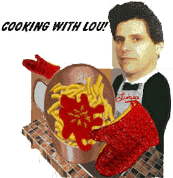

Italian Recipe Of The Day
"The Italian Meatball Sandwich"The Meatball Sandwich is a very complicated sandwich. You start off with some really good French bread. You want a good 12-inch loaf. You take the loaf and slice it in half long ways. Next you spread some really good homemade meat sauce on the bottom half. Now it's time for the meatballs. By the way if you don't know how to make good homemade meatballs don't bother trying this recipe. Now take the meatballs and just sort of throw them on the bottom half of the bread. Next you throw some Mozzarella on top of the meatballs, sprinkle a little Parmesan cheese and toss it in the oven. After a couple of minutes when the cheese gets all gooey you know it's time to eat. Take the sandwich out of the oven, throw a little more meat sauce on the top half of the bread, slap it together and bon appetite! Best when served with a fine chilled Chianti, or a beer.
Copy the Recipe